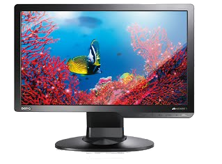

|  |
La función principal del monitor es evidentemente la visual. Gracias a él, podemos ver el trabajo y las órdenes que estamos realizando, o bien visualizar otros contenidos, revisar información almacenada y un innumerable etcétera de tareas. Las principales características que definen a un monitor son en primer lugar, la resolución, que según sea mayor o menor nos dará una imagen más nítida o menos. La resolución se mide en ppi (puntos por pulgada, points per inch en inglés) o bien en pixels, que son el resultado de multiplicar los puntos horizontales por los verticales que es capaz de mostrar un monitor. Otra característica asociada a los monitores es el tamaño de imagen capaz de mostrar, y que se define por las pulgadas. Estas se obtienen midiendo directamente la diagonal desde una esquina inferior a otra superior. Evidentemente a mayor numero de pulgadas, mayor será el tamaño de imagen, pero no debemos confundir esto con la resolución. Una imagen puede ser enorme, pero muy poco definida. La definición, recordemos, siempre viene expresada en ppi. |